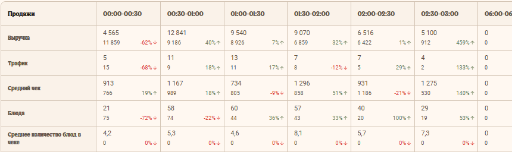
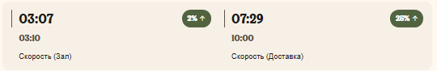
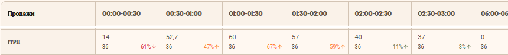

Выручка ниже цели — что делать в первую очередь?
Для управляющих сменой
Показатели
Показатели
ресторана
От цифр в Brave&Bold — к решениям на смене
Когда всё меняется быстрее плана
Команда перегружена, скорость падает — кого и куда переставить?
Заготовок слишком мало или много — довериться системе или вмешаться?
Показатели помогают заменить догадки фактами: увидеть причину, выбрать действие и не потерять контроль над сменой.
Время прохождения6 коротких модулей
15 минут
01 / 06Доходы
Доходы
ресторана
Откуда появляется выручка и где видеть цель
Выручка — доход ресторана: все оплаты заказов, которые внесли Гости.
НаличныеБанковские картыБаллы “Спасибо”Короны
Выручку ресторан получает через каналы продаж. Это способы, с помощью которых Гость делает у нас заказ и оплачивает его.
- Киоски
- Мобильное приложение
- Собственная доставка
- Агрегаторы
- Касса
- Кинг Авто
- Другие Digital-каналы
Интересный фактПочему Digital особенно важен?Раскрыть
5 из 6Гостей в 2023 году заказывали через Digital-каналы
01Онлайн-заказ
→02Качество и скорость
→03Гость возвращается
Поэтому контролируй весь путь продукта: от приёма поставки до вручения готового заказа Гостю.
В Brave&Bold ты отслеживаешь, выполняет ли ресторан цель по финансовой выручке.
Финансовую выручку рассчитывают аналитики, а цель утверждает руководство компании.

К 18:00 ресторан отстаёт от цели по выручке. До конца дня ещё четыре часа. Какое решение управляющего будет наиболее обоснованным?
Твоя задача — ежедневно достигать цели по выручке на своей смене. Только тогда твой ресторан выполнит ежемесячный план.
Отслеживать выручку тебе также помогает PLS: система прогнозирует продажи, учитывает фактическую выручку и показывает, на сколько процентов ресторан идёт выше или ниже плана. При включённой автокорректировке PLS сама пересчитывает количество заготовок, а при необходимости процент и количество можно скорректировать вручную.
Дальше по треку тебя ждёт отдельный курс «Система PLS». В нём ты подробнее разберёшь, как работать с прогнозом продаж, автокорректировкой и ручными изменениями.
А сейчас разберемся, как ты можешь влиять на достижение цели по выручке.
02 / 06С помощью каких показателей
С помощью каких показателей
ты влияешь на выручку
Трафик × средний чек
Выручка= товарооборот
=Трафикколичество Гостей
×Средний чекстоимость заказа
Выручка складывается из трафика и среднего чека.
Ты влияешь на оба показателя. Их тоже смотри в Brave&Bold.
Раскрой показатель
Нажимай на карточки, чтобы увидеть определение и управленческий фокус.
01 Выручка
Товарооборот, или выручка, показывает доход Ресторана. То есть это все средства, которые Гости заплатили за заказы. Учитываются: наличные, банковские карты, баллы «Спасибо» и короны по карте Бургер Кинг. Где смотреть: в Brave&Bold.
Сверяй фактическую выручку с целью в Brave&Bold, а динамику по получасовым продажам — в PLS. Если есть отклонение, определи его источник — трафик или средний чек — и выбери действие для смены.
02 Трафик
Трафик — это количество Гостей, которые сделали заказ. Показатель смотри в Brave&Bold.
Чтобы Гости к нам возвращались, важно обеспечить качественный сервис, высокую скорость приготовления заказа, вкусные блюда, комфорт и безопасность пищи — то есть работать над Гостевым опытом.
03 Средний чек
Средний чек — сумма, которую Гость в среднем платит за заказ. Он рассчитывается как выручка, разделённая на количество Гостей. Показатель смотри в Brave&Bold.
Средний чек зависит от наполненности — количества позиций в заказе — и стоимости блюд. В Brave&Bold количество проданных блюд показано в строке «Блюда», а наполненность — в строке «Количество блюд на чек».
Чтобы увеличить средний чек, определи нужный фокус продаж и организуй работу команды с помощью треугольника продаж, подсказки на опережение и активных продаж на кассе и в окнах Кинг Авто.

Трафик не изменился, но выручка снизилась. Что нужно сделать управляющему в такой ситуации?
Что помогает Гостям возвращаться
Трафик растёт, когда новые Гости приходят, а постоянные возвращаются. Возвращаться им помогает хороший Гостевой опыт.
Пять факторов
От действий на смене — к Гостевому опыту
Локальный маркетинг
Ты организуешь работу промоутеров и помогаешь команде превратить визит по акции в желание вернуться.
Скорость
Ты управляешь расстановкой, заготовками, обратной связью и обучением команды.
Качество блюд
Ты контролируешь приготовление и сборку: быстро — не значит в ущерб качеству.
Гостеприимство
Ты задаёшь стандарт общения и даёшь команде обратную связь.
Комфорт и безопасность
Ты контролируешь чистоту, комфорт в ресторане и безопасность пищи.
Общий результат
Гостевой опыт
Эти факторы формируют впечатление от ресторана. Чем лучше Гостевой опыт, тем больше лояльных Гостей возвращается и тем выше трафик.
Почему это важно для тебя
Общий результат влияет и на твой результат
Гостевой опыт важен не только для возвращения Гостей и трафика. Выполнение цели по этому показателю учитывается и в премии управляющего сменой.
Как следить за Гостевым опытом
Отдельная программа Eyeflow показывает, как у ресторана обстоят дела с Гостевым опытом и что стоит улучшить. Ключевые данные смотри в Brave&Bold. Даже если негативных отзывов нет, продолжай контролировать качество блюд, сборку заказов и чистоту.
Работу с отчётами по Гостевому опыту ты изучал раньше в курсе «Гостемания, работа с отчетами для АУП и выше». Вернись к нему, если хочешь вспомнить материал. Если ты ещё не проходил этот курс, пройди его.
Скорость обслуживания — SOS
Скорость — часть Гостевого опыта, но у неё есть отдельный показатель. SOS считается с момента, когда Гость получил чек, до выдачи последней позиции заказа. Отслеживай его в Brave&Bold.
Цель SOS3:103 минуты 10 секунд
Цель скорости обслуживания по компании — 3 минуты 10 секунд. Ты влияешь на результат через расстановку, нужное количество заготовок, обратную связь и обучение команды.

В обед SOS ухудшился, хотя людей на смене достаточно. Очередь накапливается только у выдачи, а кухня работает в обычном темпе. Какой план действий лучше?
Про управление выручкой
- Показатели помогают тебе понять, над чем нужно поработать, чтобы достичь целей по выручке.
- Чтобы отслеживать цель по выручке, используй Brave&Bold, а данные по получасовым продажам смотри в PLS.
- Выручка складывается из количества заказов и их стоимости, поэтому ты отвечаешь за цели по трафику и среднему чеку.
- Трафик растёт не только за счёт новых Гостей: хороший Гостевой опыт помогает постоянным Гостям возвращаться.
03 / 06Виды затрат
Виды затрат
ресторана
FC, LC и расходы, которыми можно управлять
Затраты — это средства, которые потратили на продукцию и ее производство, аренду, коммунальные услуги, зарплату сотрудникам и т.д.
Директор видит все затраты ресторана в статьях ежемесячного отчета, который называется “P&L”, или “Отчет о прибылях и убытках”.
В затраты ресторана входит несколько статей. Ты, как управляющий сменой, влияешь на некоторые из них:
- FCзатраты на производство продукции (Food Cost, или FC);
- LCзатраты на оплату труда сотрудников (Labor Cost, или LC);
- ₽коммунальные расходы;
- ↗расходы на различный ремонт (Прочие затраты).
Сейчас подробнее поговорим про эти показатели.
Food Cost
Затраты на производство продукции (FC) делятся на прямые и прочие.
Прямой FC включает стоимость продуктов и упаковки, которые использовали, чтобы приготовить и выдать заказ.
Прочий FC учитывает списания, питание сотрудников, недостачи и излишки по итогам инвентаризации.
Раздели Food Cost
Перетащи элементы в подходящую группу.
Прямой FCПеретащи сюда
Прочий FCПеретащи сюда
Labor Cost
Затраты на оплату труда (LC) включают зарплаты, премии, отпуска и больничные ЧБРов и АУП ресторана.
ЧБРы получают почасовую оплату, поэтому ты влияешь на LC через отработанные часы: при необходимости отпускаешь сотрудников раньше или вызываешь дополнительных и контролируешь их отметки о приходе и уходе в Биосмарт.
Низкая комплектность и высокая текучесть также увеличивают LC.
100%цель
Комплектность
Комплектность — соотношение фактического числа работающих сотрудников и количества, необходимого для плановой выручки.
Если показатель ниже, команда перегружена, а скорость, качество обслуживания и выручка могут снижаться.
0%цель
Текучесть
Текучесть — соотношение уволенных сотрудников и тех, кто числится в ресторане в ставках.
Ты влияешь на неё через планирование нагрузки, общение, обратную связь, обучение и развитие команды.
Коммунальные услуги и ремонт
Затраты на коммунальные услуги и ремонт относятся к разным статьям “Отчета о прибылях и убытках”, но ты влияешь на них одинаково. Ты снижаешь все эти расходы, когда следишь, что сотрудники:
01выключают свет в помещениях, где никого нет;
02закрывают двери кулеров и фризеров;
03бережно относятся к инвентарю и оборудованию;
04включают оборудование только при необходимости.
Контролируя Food Cost, Labor Cost и другие расходы, ты влияешь на прибыль ресторана. Дальше разберём, как она формируется.
04 / 06Основной показатель эффективности
Основной показатель эффективности
работы ресторана
Как выручка превращается в прибыль
Сумма, которая остаётся после вычета всех расходов из доходов.
Есть три вида прибыли. На каждую из них твои решения на смене влияют по-разному.
Маржинальная прибыль
Маржинальная прибыль, или маржа, — то, что остаётся от выручки после вычета Food Cost (FC): затрат на продукты, упаковку и других производственных затрат. Маржу считают в рублях или процентах от выручки.
На смене ты влияешь на маржу, когда работаешь с выручкой и контролируешь использование продуктов, упаковки, списания и другие составляющие FC.
Операционная прибыль
Операционная прибыль — то, что остаётся от маржи после вычета Labor Cost (LC): зарплат, премий, отпусков и больничных сотрудников.
На смене ты влияешь на операционную прибыль через маржу и отработанные часы команды: корректируешь состав смены и контролируешь отметки в Биосмарт.
EBITDA
EBITDA — прибыль, которую получает ресторан после вычета из выручки затрат на производство продукции, зарплат сотрудников, аренды, маркетинговых и прочих затрат.
На смене ты влияешь на EBITDA, когда поддерживаешь выручку, контролируешь FC и LC, экономно используешь ресурсы и бережёшь оборудование.
На схеме показано, какие затраты последовательно вычитаются из выручки и какой вид прибыли остаётся на каждом этапе.
Выручкавсе доходы ресторана
−Food Costзатраты на производство
=Маржавыручка минус FC
Маржарезультат первого шага
−Labor Costзатраты на оплату труда
=Операционная прибыльмаржа минус LC
Операционная прибыльрезультат второго шага
−Другие расходыаренда и прочие затраты
=EBITDAитог после всех вычетов
Проследи, как формируются виды прибыли
Нажимай на вычеты по порядку и смотри, какой вид прибыли получается на каждом этапе.
Как управляющий сменой, ты не отслеживаешь маржу, операционную прибыль и EBITDA напрямую, но решения каждой смены влияют на их итоговые значения в P&L — отчёте о прибылях и убытках.
05 / 06Производительность
Производительность
труда
ITPH показывает нагрузку команды
ITPH показывает, сколько проданных позиций приходится на один отработанный час команды.
Где смотреть: в Brave&Bold.
Количество проданных за период позиций÷Отработанные часы за период
За 2 часа ресторан продал 126 позиций. За этот период команда отработала 6 часов. Рассчитай ITPH.
В Brave&Bold можно сравнить запланированный и фактический ITPH по часам работы ресторана.

Как скорректировать расстановку?
Во время пика на сборке заказов растёт очередь. Там работает новый сотрудник, а опытный сотрудник на менее загруженной станции завершил основные задачи. Как использовать SEEF?
Как управлять нагрузкой на смене
Используй ITPH и расстановку по SEEF, чтобы вовремя менять организацию работы команды.
Расстановка по SEEF
На самые загруженные станции ставь опытных и быстрых сотрудников.
Усиление
Добавляй помощь на станции, где нагрузка выше.
Ротация
Переводи сотрудников между станциями с учётом текущей загрузки.
Перерывы
Отпускай сотрудников на запланированные перерывы.
Обучение
Обучай на рабочем месте, чтобы гибко менять роли сотрудников по расстановке SEEF.
Материалы по SEEF
Если нужно освежить правила расстановки, открой материалы в КингДом.
06 / 06Главное
Главное
по теме
Соедини показатели в одну систему
- Анализируй показатели и следи, чтобы ресторан достигал поставленных целей. Не перегружай сотрудников.
- Следи за динамикой показателей и их целевым значением в Brave&Bold.
- Все показатели, за которые ты отвечаешь, по-своему влияют на прибыль ресторана. Когда меняется один, изменятся и другие.
- Когда ты выполняешь цель по выручке и контролируешь расходы на смене, ты влияешь на прибыль ресторана.
Что влияет на прибыль ресторана
Управляй двумя сторонами результата: помогай ресторану больше зарабатывать и контролируй затраты смены.
Хороший Гостевой опыт помогает возвращать Гостей, а наполненность и стоимость блюд влияют на средний чек.
Следи за продуктами и списаниями, соотносись с загрузкой команды и экономно используй ресурсы.
Выручка−Затраты=Прибыль
Выбери верные связи
Можно выбрать несколько вариантов. Оцени не отдельные определения, а влияние показателей друг на друга.
Формулы показателей
Выручка, средний чек, виды прибыли и ITPH — на одном листе.
Можно завершать
Пройди финальный тест и нажми кнопку, чтобы сохранить результат в системе обучения.
Результат сохранён. Курс завершён.